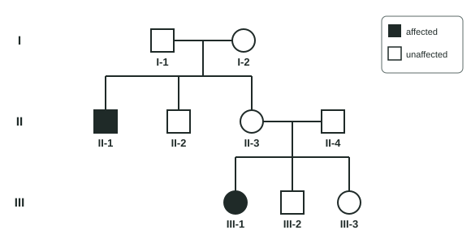

Mendelian Genetics
Each diploid organism carries two alleles of every gene, one on each homolog.
Part 1 · Hook
Why this matters
Two parents with no sign of cystic fibrosis can have a child with it. A trait can vanish for a generation and reappear, and for most of history nobody could say why. In the 1860s, Gregor Mendel, a monk in what is now the Czech Republic, crossed pea plants by hand for eight years and counted thousands of offspring. His counts fell into simple ratios, like 3 to 1, that he explained with two rules about hidden "factors". We now call them alleles, and we know the rules follow straight from how chromosomes move in meiosis.
Part 2 · Before you start
What this builds on
Part 3 · Prerequisite check
Quick check before you start
1. In meiosis I, the two homologous chromosomes of a pair
- separate, so each gamete gets one of them
- both go into every gamete
- join into a single chromosome
Show the answer
Homologs separate in anaphase I, so each gamete receives one homolog of each pair.
- Correct: separate, so each gamete gets one of them:
- both go into every gamete:
- join into a single chromosome:
2. Ignoring crossing over, how many kinds of gamete can a cell with two homologous pairs make by independent assortment?
- 4
- 2
- 8
Show the answer
Each pair lines up either way, independently: 2 × 2 = 4 combinations.
- Correct: 4:
- 2:
- 8:
3. Alleles are
- different versions of the same gene, found at the same place on homologous chromosomes
- two identical copies of a gene made in S phase
- genes found on different chromosomes
Show the answer
Alleles are versions of one gene; homologs carry the same genes but possibly different alleles.
- Correct: different versions of the same gene, found at the same place on homologous chromosomes:
- two identical copies of a gene made in S phase:
- genes found on different chromosomes:
Part 4 · See it
See it first
![Left: a true-breeding purple-flowered pea plant (PP), whose gametes all carry P, is crossed with a true-breeding white-flowered plant (pp), whose gametes all carry p. Every F1 plant is purple, Pp: the purple allele is dominant and the white allele recessive. The F1 plants are self-pollinated; each makes P and p gametes in equal numbers. Right: a Punnett square for Pp × Pp, with P and p along the top (pollen) and side (eggs). The boxes are PP purple, Pp purple, Pp purple and pp white. F2 phenotypes: 3 purple to 1 white; genotypes: 1 PP to 2 Pp to 1 pp.](../figures/monohybrid-cross.svg)
Part 5 · Step by step
How it works, step by step
- A diploid organism carries two alleles of each gene, one on each homolog, inherited one from each parent.Its genotype can be homozygous (two identical alleles) or heterozygous (two different ones).
- In a heterozygote, a dominant allele sets the phenotype by itself.A Pp plant looks like a PP plant, and the recessive allele is hidden.
- In meiosis I, the homologs of each pair separate into different cells.Each gamete carries one allele of each gene, and a heterozygote makes P and p gametes in equal numbers: the law of segregation.
- At fertilization, gametes combine at random.Pp × Pp gives PP, Pp and pp offspring in a 1:2:1 ratio, so 3 show the dominant phenotype for every 1 recessive.
- Homologous pairs line up independently at metaphase I, so genes on different chromosome pairs sort into gametes independently.AaBb makes AB, Ab, aB and ab gametes equally (independent assortment), and AaBb × AaBb gives a 9:3:3:1 phenotype ratio.
- A gene on the X chromosome has no partner on the Y.A male shows whatever allele his one X carries, so X-linked recessive traits are far more common in males.
Part 6 · Key ideas
Key ideas
- Genotype is the pair of alleles (PP, Pp, pp); phenotype is the trait you see. A dominant allele shows in a heterozygote; a recessive one shows only when there are two copies.
- Law of segregation: the two alleles of a gene separate into different gametes, because homologs separate in meiosis I. Law of independent assortment: genes on different chromosome pairs sort independently.
- Punnett squares and the product rule (multiply chances of independent events) and sum rule (add chances of mutually exclusive outcomes) predict ratios: 3:1 and 1:2:1 for a monohybrid cross, 9:3:3:1 for a dihybrid cross.
- A testcross to a homozygous recessive reveals an unknown genotype: any recessive offspring means the parent is heterozygous.
- Pedigrees show the pattern: autosomal recessive (skips generations, carriers), autosomal dominant (every generation), X-linked recessive (mostly males, passed through carrier daughters). The same rules in peas, flies and people point to common ancestry.
Part 7 · Misconception
A common mistake
The wrong idea: A dominant allele is the more common one in a population, or the one that is better for the organism.
What actually happens: "Dominant" only describes what a heterozygote looks like: the dominant allele's effect shows when one copy is present. Huntington's disease is caused by a dominant allele that is rare and harmful; many recessive alleles are common.
Part 8 · Check yourself
Check yourself
Exam-style questions. Anything you miss goes into your review queue.
Model
A family with a rare trait
The pedigree shows three generations of a family in which some members have a rare condition caused by one gene. II-4 married into the family and has no relatives with the condition. Use A for the allele that does not cause the condition and a for the allele that does.

1. Which mode of inheritance is most consistent with the pedigree, and which individual's phenotype rules out X-linked recessive inheritance?
- Autosomal recessive; III-1 is an affected daughter of an unaffected father, II-4.
- Autosomal dominant; II-1 is affected even though both of his parents are unaffected.
- X-linked recessive; II-1, an affected son, has a mother who does not show the trait.
- Autosomal recessive; II-1 is an affected son of an unaffected mother, I-2.
Show the answer
Unaffected parents (I-1 and I-2; II-3 and II-4) have affected children, so the allele is recessive. A daughter with an X-linked recessive trait needs an affected father, because he gives her his only X; III-1's father is unaffected, so the gene is on an autosome.
- Correct: Autosomal recessive; III-1 is an affected daughter of an unaffected father, II-4.: Affected children of unaffected parents point to recessive; an affected daughter of an unaffected father rules out X-linked recessive.
- Autosomal dominant; II-1 is affected even though both of his parents are unaffected.: A dominant trait shows in anyone carrying the allele, so an affected child of two unaffected parents argues against dominant inheritance.
- X-linked recessive; II-1, an affected son, has a mother who does not show the trait.: II-1 fits X-linked recessive, but III-1 does not: her father would have to be affected.
- Autosomal recessive; II-1 is an affected son of an unaffected mother, I-2.: An affected son of an unaffected mother fits both autosomal and X-linked recessive, so it does not rule out X-linkage.
2. Select every individual who must be heterozygous (Aa).
- I-1
- I-2
- II-2
- II-3
- II-4
- III-3
Show the answer
Each unaffected parent of an affected child must carry one a allele: I-1 and I-2 (parents of II-1) and II-3 and II-4 (parents of III-1). II-2 and III-3 are unaffected children of two carriers and could be AA or Aa.
- Correct: I-1: I-1 is unaffected but has an affected son, so he passed on an a allele: Aa.
- Correct: I-2: I-2 is unaffected but has an affected son: Aa.
- II-2: II-2 is unaffected (not aa), but he may have received A from both parents: AA or Aa.
- Correct: II-3: II-3 is unaffected but has an affected daughter: Aa.
- Correct: II-4: II-4 is unaffected but has an affected daughter, so despite no family history he carries a: Aa.
- III-3: III-3 could be AA or Aa; nothing in the pedigree decides it.
Data table
Kernels on an ear of corn
Each kernel on an ear of corn is a seed, the offspring of one fertilization. A true-breeding plant grown from purple, smooth kernels was crossed with a true-breeding plant grown from yellow, wrinkled kernels. Every F1 kernel was purple and smooth. F1 plants were then self-pollinated, and students counted the F2 kernels on one ear. Kernel color and kernel texture are each controlled by one gene, on different chromosome pairs.
| Kernel phenotype | Number of kernels |
|---|---|
| Purple, smooth | 216 |
| Purple, wrinkled | 79 |
| Yellow, smooth | 70 |
| Yellow, wrinkled | 25 |
| Total | 390 |
3. Considering color alone, calculate the ratio of purple to yellow F2 kernels, as the number of purple kernels per yellow kernel. Give one decimal place.
Type a number.
Show the answer
Purple: 216 + 79 = 295. Yellow: 70 + 25 = 95. 295 ÷ 95 = 3.1, close to the 3:1 of a monohybrid cross.
- Answer: 3.1
4. If the two genes assort independently, how many of the 390 F2 kernels would you predict to be yellow and wrinkled? Give a whole number.
Type a number in kernels.
Show the answer
Yellow and wrinkled is the double recessive class, 1/4 × 1/4 = 1/16 of the F2. 390 ÷ 16 = 24.4, about 24 kernels (25 were counted).
- Answer: 24 kernels
5. Two plants with genotype AaBbCc are crossed; the three genes assort independently. The chance that an offspring is aabbcc is 1 in how many? Give a whole number.
Type a number.
Show the answer
For each gene, Aa × Aa gives aa with probability 1/4. Product rule: 1/4 × 1/4 × 1/4 = 1/64, so 1 in 64.
- Answer: 64
6. Red-green color blindness is X-linked recessive. A color-blind man has children with a woman who has normal vision but whose father was color-blind. What is expected among their children?
- Half of their sons and half of their daughters are color-blind.
- Half of their sons are color-blind, and their daughters have normal vision.
- Their sons have normal vision, and half of their daughters are color-blind.
- One quarter of their children are color-blind, and those are sons.
Show the answer
Her father gave her his X with the allele, so she is XBXb. The man is XbY. Sons get Y from him and either X from her: 1/2 XbY. Daughters get his Xb and either of hers: 1/2 XbXb.
- Correct: Half of their sons and half of their daughters are color-blind.: Mother XBXb × father XbY gives color-blind sons and daughters, half of each.
- Half of their sons are color-blind, and their daughters have normal vision.: Every daughter receives the father's Xb, so a daughter is color-blind whenever her mother also passes Xb (half the time).
- Their sons have normal vision, and half of their daughters are color-blind.: Sons get their X from the mother, who passes Xb half the time.
- One quarter of their children are color-blind, and those are sons.: One quarter is the result for a carrier mother and an unaffected father, not a color-blind father.
7. Which event in meiosis is the physical basis of the law of segregation?
- Homologs separate in anaphase I, so each gamete gets one allele of each gene.
- Sister chromatids separate in anaphase II, so each gamete gets two identical alleles.
- Homologs swap pieces in prophase I, so alleles move between chromosomes.
- DNA is copied before meiosis, so each allele is present twice.
Show the answer
The two alleles of a gene sit on the two homologs. When the homologs go to opposite poles in meiosis I, the alleles go to different cells, which is segregation.
- Correct: Homologs separate in anaphase I, so each gamete gets one allele of each gene.: Separating homologs separates the two alleles a diploid cell carries.
- Sister chromatids separate in anaphase II, so each gamete gets two identical alleles.: Sister chromatids carry identical alleles, and each gamete ends with one chromatid, so one allele.
- Homologs swap pieces in prophase I, so alleles move between chromosomes.: Crossing over makes new combinations of alleles of different genes; segregation is about the two alleles of one gene.
- DNA is copied before meiosis, so each allele is present twice.: Copying makes identical sister chromatids; it does not separate the two different alleles.
8. In fruit flies, white eyes (w) is X-linked recessive to red eyes. Cross 1: a red-eyed (homozygous) female × a white-eyed male. Cross 2: a white-eyed female × a red-eyed male. Compared with cross 1, predict each value for the offspring of cross 2.
| Variable | Change |
|---|---|
| Fraction of sons with white eyes | — |
| Fraction of daughters with white eyes | — |
| Fraction of daughters who carry the white allele | — |
| Fraction of all offspring with red eyes | — |
Show the answer
For an X-linked gene, which parent carries the allele matters, because sons get their only X from their mother. Swapping the parents' phenotypes changes the sons' results but not the daughters'.
- Fraction of sons with white eyes: increases. Sons get their X from the mother. In cross 2 she has only Xw, so every son is white-eyed; in cross 1 none are.
- Fraction of daughters with white eyes: no change. In both crosses each daughter gets one red allele (from the father in cross 2, the mother in cross 1), so no daughters are white-eyed.
- Fraction of daughters who carry the white allele: no change. In both crosses every daughter gets exactly one Xw: from the father in cross 1, from the mother in cross 2.
- Fraction of all offspring with red eyes: decreases. Cross 1 gives red eyes in every fly; cross 2 gives red-eyed daughters and white-eyed sons, so only half.
Part 9 · Summary
Summary
Each diploid organism carries two alleles of every gene, one on each homolog. Its genotype may be homozygous or heterozygous; a dominant allele sets the phenotype of a heterozygote, and a recessive allele shows only in a homozygote. Because homologs separate in meiosis I, each gamete gets one allele of each gene (segregation), and genes on different chromosome pairs sort independently (independent assortment). Punnett squares and the product and sum rules predict 3:1 and 1:2:1 monohybrid ratios, 9:3:3:1 dihybrid ratios and the 1:1 result of a testcross on a heterozygote. Pedigrees reveal autosomal recessive, autosomal dominant and X-linked patterns; X-linked recessive traits are more common in males, who have one X. The same rules apply across eukaryotes, which is evidence of common ancestry.
Part 10 · Up next
What comes next
Part 11 · Connections